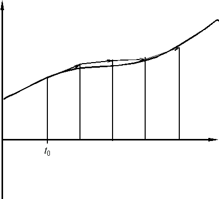

Figure18: Sketch of the
function y(t)
(dark line) and the Euler method solution (arrows). Each arrow
is tangental to to the solution of ( 60 )
passing through the point located at the start of the arrow. Note
that this point need not be on the desired y(t)
curve.